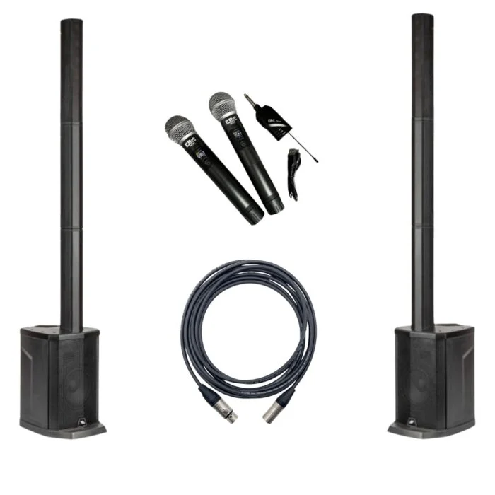
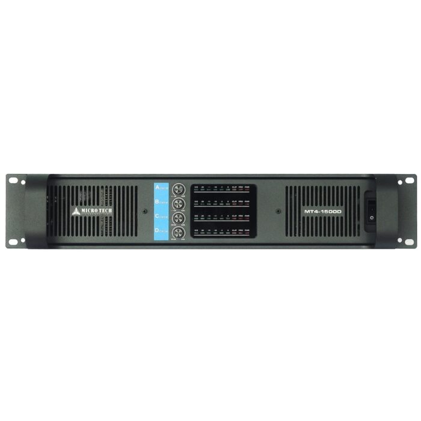

| # | รายการสินค้า | ราคา | หมายเหตุ |
|---|---|---|---|
| 1 | 
|
6,900 | มิกเซอร์ 8 แชนแนล พร้อมช่องต่อแบบ Mic, Line, และ Guitar 16-bit, 44.1/48 kHz Stereo USB Output สำหรับการบันทึกเสียง และ เล่นเสียงผ่านคอมพิวเตอร์แบบง่าย ๆ ช่องเสียบ XLR พร้อม Gain Trim, High-Pass Filters และ 48V Phantom Power ใช้กับอุปกรณ์ iOS ได้ เช่น iPhone, iPad ผ่านตัวแปลง Lightning to USB Camera Adapter ได้ มีช่องเสียบ HI-Z สำหรับกีต้าร์ และ เบส สามารถเลือกความถี่ในการ EQ เสียงกลางได้ มีเอฟเฟคคุณภาพในตัว จาก Alesis |
| 2 | 
|
16,000 | VL Audio Viva 715D ลำโพง Active ขนาด 15 นิ้ว 2 ทาง ลำโพงมีแอมป์ในตัว กำลังวัตต์ 1400 วัตต์ ความดังสูงสุด 136dB แบรนด์ของคนไทย โดยแบรนด์ VL Audio มีเทคโนโลยี FIR LINEAR PHASE ตู้ลำโพงแอคทีฟ VL audio Viva 715D แบรนด์คนไทย ขนาด 15 นิ้ว แบบ 2 ทาง ให้กำลังขับสูงสุด 1,400 วัตต์ ความดังสูงสุด 136dB มี DSP Processing สามารถเลือกใช้งานได้ถึง 6 Preset มาพร้อมกับเทคโนโลยี FIR LINEAR PHASE อีกด้วย นับว่าเป็นตู้ลำโพงรุ่นใหม่ล่าสุด ประสิทธิภาพสูง จากยี่ห้อ VL-AUDIO |
| 3 | 
|
36,700 | ชุดลำโพกพกพา ขนาด 10 นิ้ว ทวีตเตอร์ 1.35 นิ้ว มีเพาเวอร์มิกเซอร์ 8 ช่องในตัว กำลังขับ 2000 วัตต์ สามารถเชื่อมต่อ Bluetooth เพื่อเล่นสื่อจากสมาร์ทโฟนได้ โปรเซสเซอร์จาก Klark Teknik ในการประมวลผลเอฟเฟค (Echo Chorus Flanger Delayed Pitch Shifter) มี ระบบกันไมค์หอนมาพร้อมไมค์ Behringer XM1800S 1 ตัว |
| 4 | 
|
6,700.- | Takstar GX6 ไมโครโฟน USB มี Audio Interface ความละเอียดที่ 16-bit/24-bit@44.1kHz-192kHz ปรับแพทเทิร์นรับเสียงได้ Takstar GX6 เป็นดิจิตอล USB ไมโครโฟน รุ่นใหม่ล่าสุด แม้ว่า Takstar จะเพิ่งเข้ามาทำตลาดในไทย แต่ก็เริ่มเป็นที่รู้จักเพราะคุณภาพของสินค้าและรีวิวมากมาย บวกกับอยู่ในเรทราคาที่ไม่สูงมาก ทำให้ตอบโจทย์กลุ่มผู้ใช้งานหลายกลุ่ม เช่น YouTubers, งานบันทึกเสียง,งานบรอดคาสต์ หรือแม้แต่สตรีมมิ่งผ่านผ่านโซเชียล |


